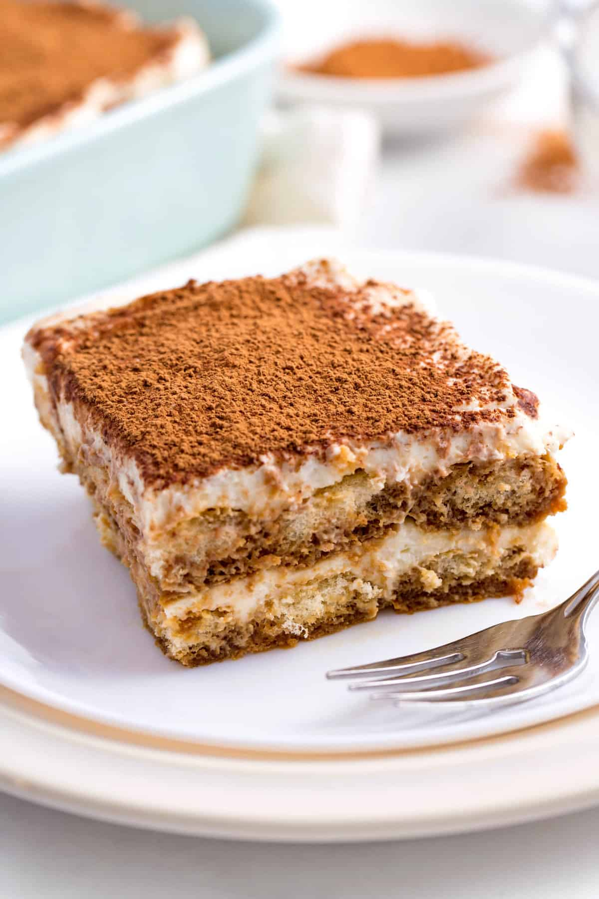

Tiramusu

The ingredients for 1 small tiramisu:
- Mascarpone: 500g
- Large egg: 2
- Coffee: 200ml
- Savoiardi biscuit: 20pcs
- Separate the yolks from the egg white
and mix the white until thick
- Add mascarpone to the yolks and mix
- Now you can add the white eggs to
the mascarpone
- Create multiple layer of
savoiardi biscuits (slightly
soaked in coffee) and the cream